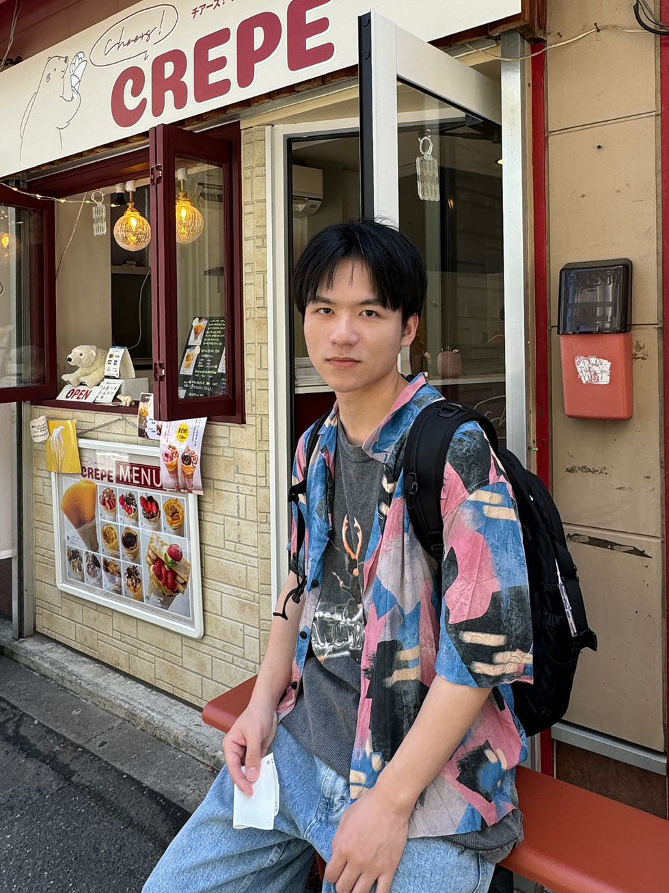
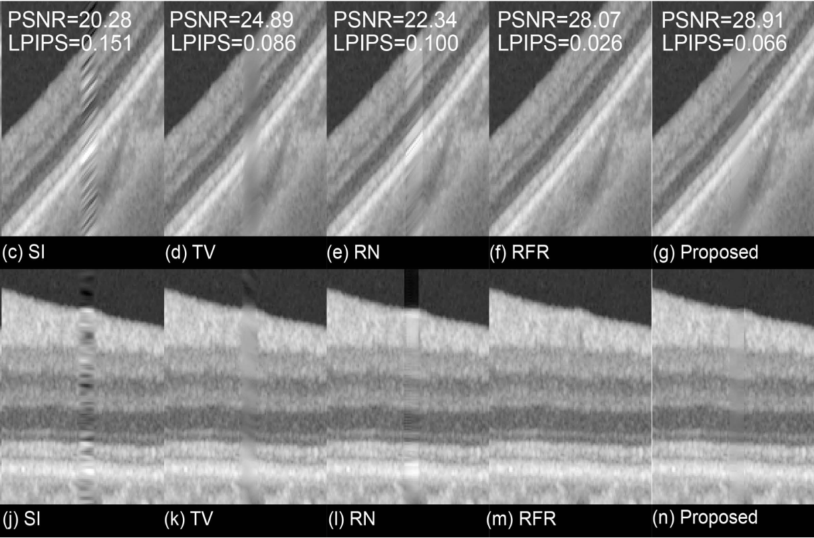

|
I am currently a final-year (2022-2025) PhD student in Nakayama Lab, Department of Creative Informatics, the University of Tokyo, supervised by Prof. Hideki Nakayama. I am supported by JSPS DC2 Fellowship. Before that, I received the M.Eng. degree in Electronic Engineering from Shanghai Jiao Tong University in 2022, supervised by Prof. Yuye Ling, and the B.Eng. degree in Communication Engineering from Shanghai University in 2019, supervised by Prof. Zhi Liu. My research interests include, but are not limited to: Trustworthiness in Vision, Vision and Language, and Medical and Biological Vision. Email / GitHub / LinkedIn / ResearchGate / Scholar |
 |
|
[Oct 30, 2024] I was selected as a (DAAD AInet fellow) for the Postdoc-NeT-AI 11/2024 Virtual Networking Week on AI for Science at the German Academic Exchange Service (DAAD). |
|
|
|

|
Jiaxuan Li*, Duc Minh Vo*, Akihiro Sugimoto, Hideki Nakayama IEEE/CVF Conference on Computer Vision and Pattern Recognition (CVPR), 2024 paper / website / code |
||||||

|
Jiaxuan Li, Duc Minh Vo, Hideki Nakayama International Conference on Computer Vision (ICCV), 2023 paper / code |
||||||
|  |
Yaoqi Tang, Yufan Li, Hongshan Liu, Jiaxuan Li, Peiyao Jin, Yu Gan, Yuye Ling, Yikai Su SPIE Medical Imaging (SPIE MI), 2022 (Image Processing Student Paper Award) paper / website |
||||||

|
Jiaxuan Li, Peiyao Jin, Jianfeng Zhu, Haidong Zou, Xun Xu, Min Tang, Minwen Zhou, Yu Gan, Jiangnan He, Yuye Ling, Yikai Su Biomedical Optics Express (BOE), 2021 paper / website / code |
||||||

|
Jiaxuan Li, Yuye Ling, Jiangnan He, Peiyao Jin, Jianfeng Zhu, Haidong Zou, Xun Xu, Yu Gan, Yikai Su SPIE Photonics West (SPIE PW), 2021 paper / website |
|
|
|
|
- Japan Society for the Promotion of Science (JSPS), Grant-in-Aid for JSPS Fellows, JPY2M, Apr. 2023 - Mar. 2025
- National Institute of Informatics (NII), NII Open Collaborative Research (Researcher), JPY1.2M, July. 2024 - Mar. 2025
- National Institute of Informatics (NII), NII Open Collaborative Research (Researcher), JPY1M, July. 2023 - Mar. 2024
- Japan Science and Technology Agency (JST), SPRING GX Fellowship, JPY620K, Apr. 2022 - Mar. 2023
|
|
- Special Allowance in the Final Year of JSPS Fellow, Japan Society for the Promotion of Science, 2024
- Google Travel Grants for Students in East Asia, Google, 2024
- Special Committee Award, the 30th Annual Meeting of the Association for Natural Language Processing, 2024
- JSPS DC2 Research Fellowship for Young Scientists, Japan Society for the Promotion of Science, 2023
- SPRING GX Fellowship, Japan Science and Technology Agency, 2022
- Outstanding Graduates, Shanghai Jiao Tong University, 2022
- COSCO Shipping Scholarship, Shanghai Jiao Tong University, 2021
- Second Prize in “Huawei Cup” The 17th China Post-Graduate Mathematical Contest in Modeling, 2020
- Academic Scholarship, Shanghai University, 2016
|
|
- Invited Talk at MIRU, Kumamoto, Japan, August 2024
- Poster Presentation at IRCN, The University of Tokyo, Japan, July 2024
- Invited Talk at Knowledge and Information Research Team, AIST, Japan, July 2024
- International Computer Vision Summer School (ICVSS), Sicily, Italy, July 2024
- Reviewer at ACL ARR 2023 October, CVPR 2024, ECCV 2024
|
|
- TA in SJTU AI2614: Digital Signal and Image Processing, Spring 2021
- TA in SJTU EE367: Fundamentals of Communication Circuits, Spring 2020
|
|